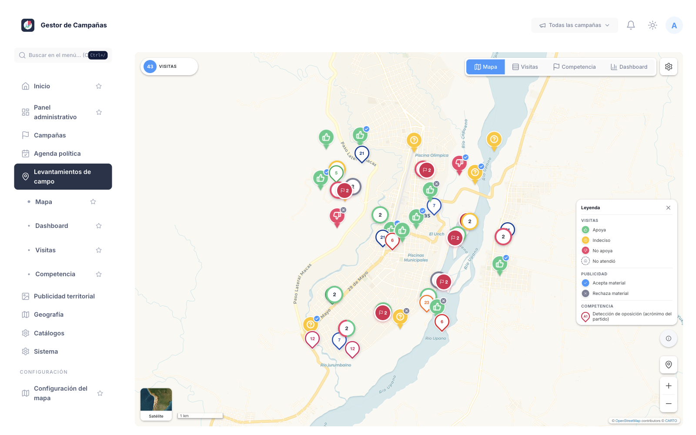
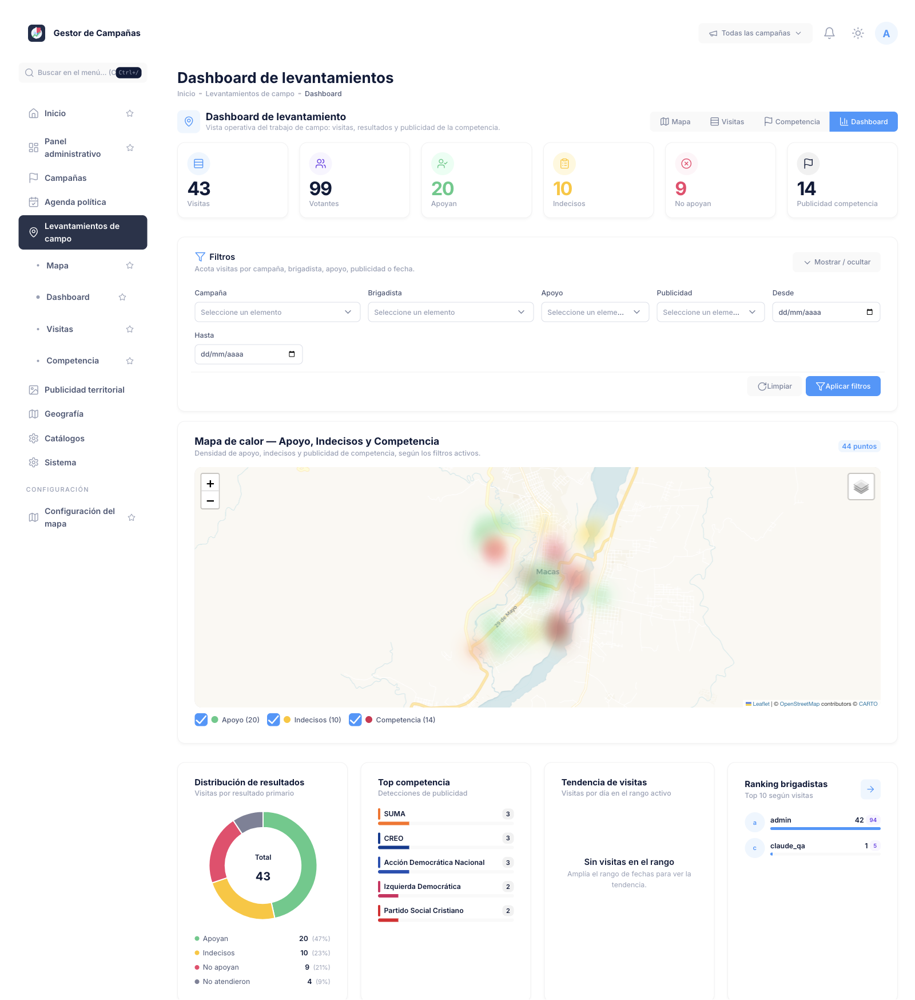
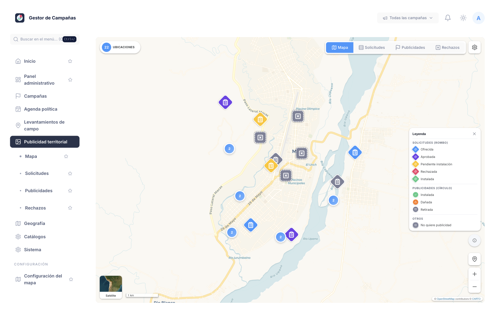
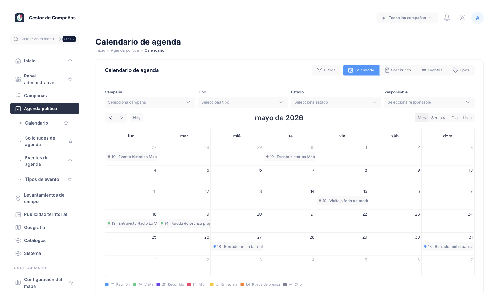

El centro de operaciones de su campaña: cada barrio, cada brigada y cada valla, en una sola pantalla.
Lo que no se ve, no se corrige — y en campaña se paga caro.
El Centro de Mando evita estos tres errores.
Las campañas modernas ya no se dirigen por intuición. Se dirigen con información.
Todo lo que su equipo hace en la calle, convertido en información que usted lee de un vistazo.
Cada visita de su equipo, en el mapa y al instante.

Asegúrelo y movilícelo el día de la elección.
Ubíquelos y conviértalos antes que el rival.
Detecte dónde crece y respóndale a tiempo.
El pulso diario de la calle y quién genera resultados.

El ranking le muestra al que rinde y al que no.
Si la producción baja, actúe el mismo día.
Cada visita queda registrada con foto y ubicación.
Controle su publicidad pieza por pieza — con foto y ubicación como prueba.

Foto y GPS por cada pieza instalada.
Vea qué zonas aún no tienen publicidad.
Priorice los espacios gratis y donados.
Cada hora, donde más votos genera.

El sistema detecta los conflictos de horario.
Apruebe los actos que más aportan votos.
Los actos sensibles quedan privados.
Todo lo que ocurre en la calle, en una sola pantalla.
El mapa de apoyo, indecisos y competencia, al instante.
Cuánto se produjo, quién produce y qué falta cubrir.
Cada pieza comprobada con foto y ubicación.
Su tiempo, sin choques ni tiempos muertos.
Cada quien registra lo suyo; usted lo ve todo consolidado.
Registran cada visita: nivel de apoyo, indecisos y competencia, con foto y ubicación como prueba.
Organizan brigadas, cargan la publicidad instalada y arman la agenda del candidato.
Ven el panorama consolidado en mapas y tableros, y deciden dónde actuar.
Datos sensibles con la tranquilidad de saber quién hace qué.
Cada quien ve solo lo que le corresponde.
Quién hizo qué, cuándo y desde dónde.
Línea de tiempo de cada cambio.
Su información, separada de cualquier otra.